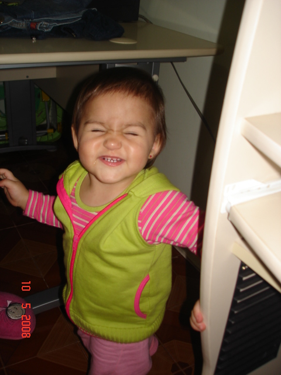
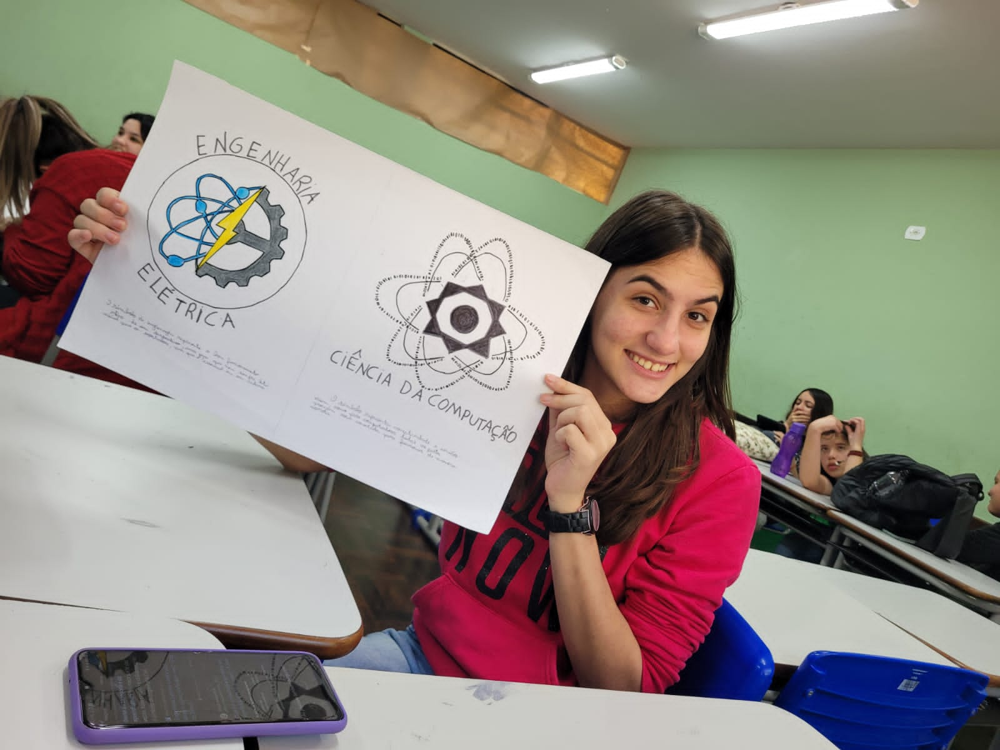

Sobre mim
Quem sou eu?

Olá! Eu sou Nicole Duarte Guirardelli
Sou estudante do 2º ano de Ciência da Computação na UniFil. Já trabalho na área a mais de três meses, na empresa MSE Engenharia.
Até agora, tenho gostado muito do curso, principalmente por ser uma área que me desafia todos os dias. Ainda não sei exatamente em qual área quero me especializar, mas acredito que tenho muito para descobrir durante meus estudos.
No meu tempo livre, eu gosto de:
- Aprender novas linguagens de programação e tecnologias;
- Buscar curiosidades históricas e conhecimentos diferentes;
- Ler livros e correr ao ar livre;
- Maratonar séries e filmes.
Minha escolha
Por que escolhi Ciência da Computação?
Até os 13 anos, eu ainda não tinha certeza sobre qual área queria seguir. Sabia que tinha interesse pela área de exatas, mas ainda não sabia exatamente qual caminho escolher.
Em 2020, durante a pandemia, comecei a me interessar mais por tecnologia. Passei a pesquisar faculdades, cursos e grades curriculares. Foi nesse processo que Ciência da Computação chamou minha atenção.
No Ensino Médio, depois de participar de uma feira de profissões da UEL, também me interessei por Engenharia Elétrica, mas como uma segunda opção. Com o tempo, percebi que Ciência da Computação era o curso que mais combinava com o que eu queria estudar.
